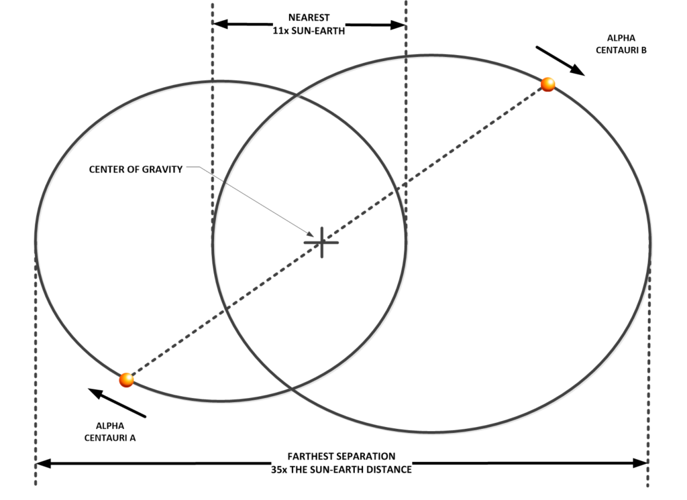
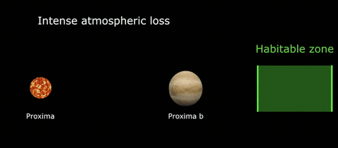
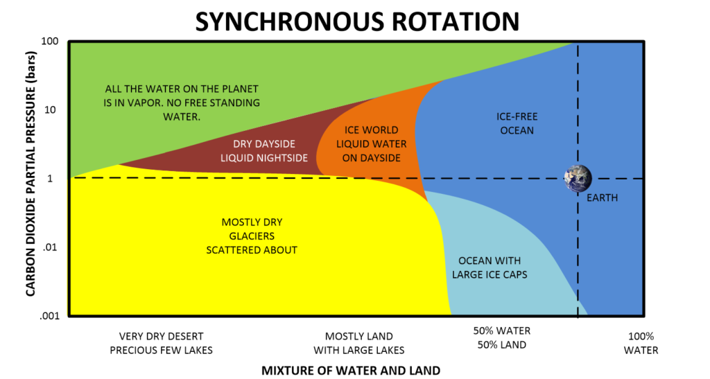
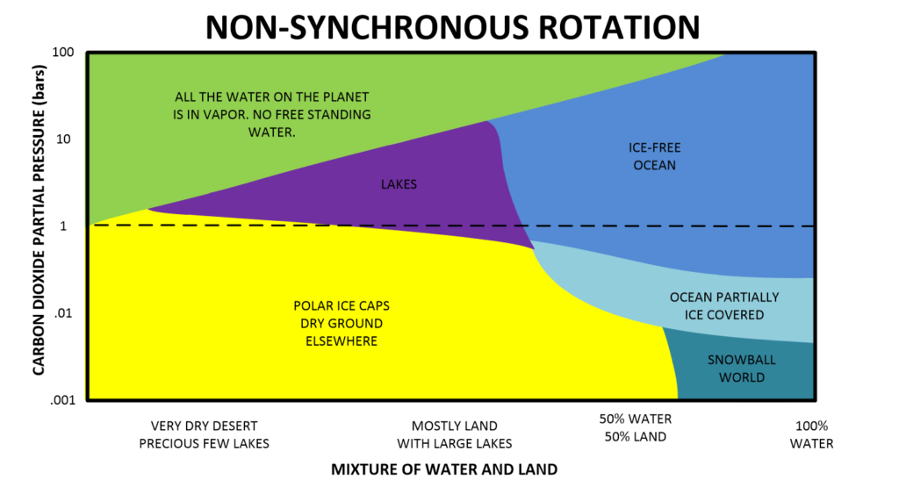
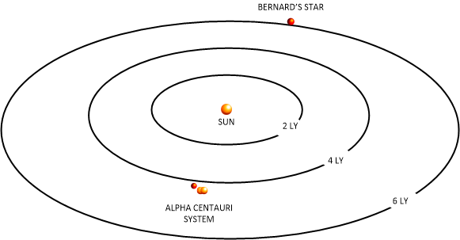
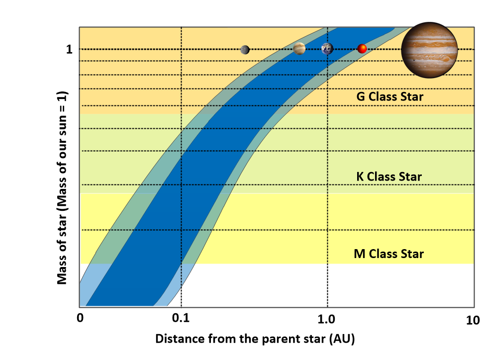
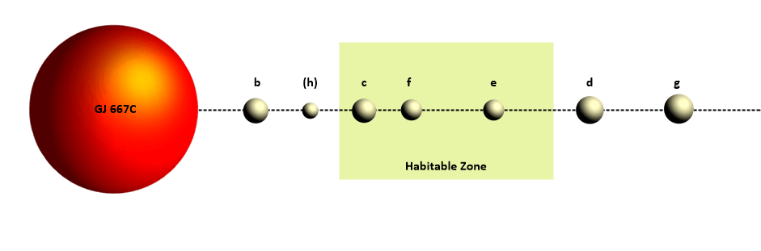
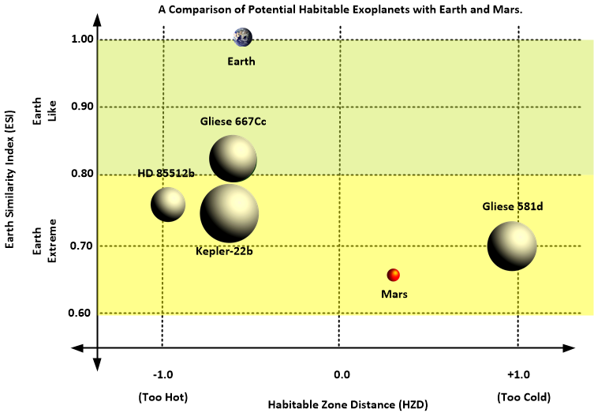
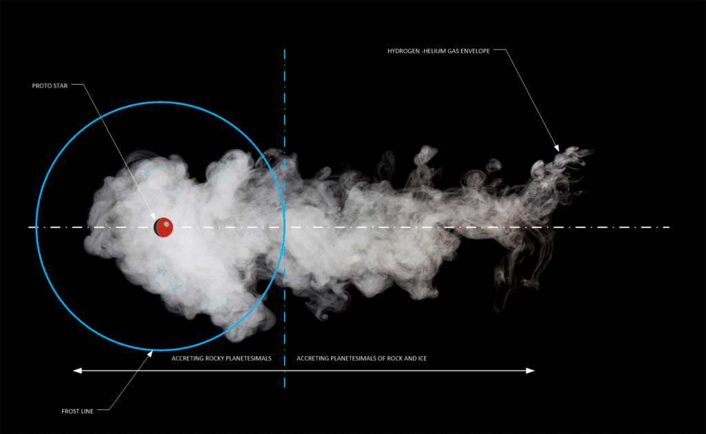

If there is one thing that is missing in the discussion of extraterrestrials, ET, UFO’s, OOPARTs, extraterrestrial visitation, and MAJestic, it is a reasonable discussion about the surrounding physical universe. No one ever talks about the”local” solar systems that are within a a few tens of light years away. No one ever really questions if there might be some kind of association between our solar system and those other solar systems around us…
An association…
Further, to hammer this point home, no one who discusses extraterrestrials ever does so armed with the knowledge of what a star is, what a planet is, and what a galaxy is. It is almost like these subjects are not taught in American schools any longer.
Much to my great dismay and chagrin.
This post is my introduction to the local physical universe that surrounds our small solar system. Or, more precisely, we will look at the utility of sentience nurseries in our immediate physical location. For reasons, that I will not get involved in at this time, our galactic region has been assigned (or allocated) to be a sentience nursery cluster.
It is not complete, but then, nothing in Metallicman is either…
“There is a serious possibility that we are being visited and have been visited for many years by people from outer space, from other civilizations. That it behooves us, in case some of these people in the future or now should turn hostile, to find out who they are, where they come from, and what they want. This should be the subject of rigorous scientific investigation and not the subject of ‘rubbishing’ by tabloid newspapers.” – Lord Admiral Hill-Norton, Former Chief of Defense Staff, 5 Star Admiral of the Royal Navy, Chairman of the NATO Military Committee
This is a list of the four nearby sentience nurseries close to Earth. (Our solar system rounds out the group to five in total.)
While no one has ever pointed these particular solar systems out to me directly, there are some very good reasons, and directed cognizant thought, that convinces me that these five are the strongest candidates that I know to exist for the sentience nurseries in this galactic region.
In other words, I know that there are five sentience nurseries, but I have never had them pointed out to me directly. Instead, I have taken what I have been exposed to, added a healthy dose of intelligent extrapolation, and came up with this strong list of candidate solar systems.
I have many other lists of local solar systems. (Of course.)
A vast number of solar systems lie around us.
These other lists are dominated by many dim brown dwarfs and red dwarf solar systems. (Many of which have not yet been discovered.) There are over 50 main groupings of which a number have multiple stars. These systems represent the solar system neighborhood surrounding our system. It is not complete or comprehensive, as researchers are constantly discovering new stars every few months.
It is not an accident that most of the stars in our neighborhood are red dwarfs, and brown dwarfs. This is typical for our galaxy. While it is possible that human habitable planets might exist around any star, the odds of finding one in our neighborhood is small. This is due to the simple fact that any habitable planet around a red or brown dwarf star must be close to it. The closer it is, the greater the chances of tidal lock, and the greater the danger from the dangers of occasional solar activity. This is especially true for (young) flare stars.
Yet, the fact that many of our extraterrestrial allies have eyesight apparently adapted to the infrared spectrum, implies that native life might be best adapted near or around a red dwarf star. But we do not know this as a fact. (I, however, believe that this is the case.)
Thus, an extraterrestrial race might find life around a dim red dwarf more comfortable than around our hotter G class star. (That also implies that there are better than average opportunities for habitable planets around said stars. Thus, perhaps all the concern related to tidal locking might be misplaced…)
Concerning extraterrestrial occupation of a given solar system; While not every system maintains human biologically habitable planets, many possess numerous extraterrestrial habitations and bases. Some support colonies, and a number of them maintain active civilizations on the more habitable planets.
The simple truth is that most space faring extraterrestrials do not need to locate biologically stable planets. Instead, they prefer to select safe and marginal worlds to operate their bases and colonies. This lies in direct opposition to conventional human scientific thought. Where only “Earth-like” planets around “Sun-like” stars hold the “best” possible chance for finding intelligent human-like life.
Conventionally, we believe that the only valuable solar system is one which might contain an Earth-like planet. But finding one that is an Earth analog is relatively rare. Instead of this, most advanced space faring extraterrestrials [1] look for otherwise stable solar systems that they can occupy through the [2] creation of their own self-sustaining facilities. They do not search for worlds identical to which they evolved upon. They [3] search for quiescent and stable worlds instead, and then [4] adapt their biological bodies to that new environment.
If you want to build a ship, don’t drum up the men to gather wood, divide the work and give orders. Instead, teach them to yearn for the vast and endless sea. -Antoine de Saint-Exupery
About the other nearby solar systems
Any visiting extraterrestrials to our system has to be familiar with the regions of space surrounding the earth to arrive here. Even if their propulsive method transcends the limitations of distance and time, they still have to know and understand the local physical region of space.
Typically, most visitors (Excluding the Mantids who originate locally, and the type-I greys who hail from a much more distant section of the galaxy.) to our system arrive from points of origin within a 140 light year sphere (This is a fact, and it is not speculation. While other races do visit us from time to time that have traveled larger distances, the vast bulk of visitors to our planet at this time come from locally derived points of origin.). That encompasses a huge volume of space.
We do not know of all the systems in that region as there are many uncategorized red dwarfs and faint brown dwarf systems. But luckily, we have a rather good understanding (It has only been recently that we have been able to detect and map the nearby brown dwarf systems. They are often too dim and too cold to be seen through most optical telescopes.) of the closest stars within a 17 light year sphere.
My personal list contains all known stars and brown dwarfs at a distance of up to 5 parsecs (16.3 light-years) from the Solar System, ordered by (an approximation of) increasing distance away from our system. In addition to our Solar System, there are over 60+ stellar systems currently known lying within this distance.
These combined systems contain a minimum of 56 hydrogen-fusing stars (of which over 50 are red dwarfs), numerous brown dwarfs, and 4 tiny hot white dwarfs. Despite the relative proximity of these objects to the Earth, only nine of them have an apparent magnitude less than 6.5, which means only about 13% of these objects can be observed with the naked eye.
“Spartans do not ask how many are the enemy but where are they.” –Plutarch, Sayings of the Spartans
Some important notes.
I have never been outside of our solar system (that I am aware of).
What I present here is a compilation of [1] known (human) astronomical information as well as [2] information that I have compiled in conjunction with MAJestic and my work with extraterrestrials. Merging the two sources together provides a comprehensive (but general) understanding of the relative condition of our interstellar neighborhood, abet in an incomplete manner. By studying this information, a true and real perspective can be obtaining regarding our place, as humans, in the local galactic region.
The reader should carefully note that very few solar systems that lie near us are compatible with physical human life.
Yet, we know that numerous nearby systems are inhabited.
There are various reasons for this. The reader should study this post carefully and acquaint themselves with the surrounding physical space. In doing so, there must be an understanding that only a very small amount of our reality is presented to us. The totality sum of our true existence is veiled from us.
The presentation of this information to the reader follows a unique methodology that I prefer.
Instead of following a traditional model, which is either by [1] distance to the sun, or by [2] alphabetical name, or [3] by year of discovery, I have chosen to use my own method. My preferred method of presentation is based upon functional usage and concerns of the reader. Therefore, I have subdivided this chapter into the following sections or sub-groupings.
| Nursery Systems | These are systems that are also (like our own) are considered to be nurseries for evolving intelligences. |
| Young Systems | These systems are very young. They are hot, large and dangerous. While we humans have often been able to observe them, they are incompatible with human-like life. |
| Similar Systems | These solar systems are similar to our own solar system that lies nearby. Some are already “Nursery Systems” and as such, are covered elsewhere. Typically, this category contains type G, and type K star systems. |
| Habitable Systems | The long duration, cooler type M red dwarfs are the preferred systems to support intelligent life. Here, I place the various systems for consideration where they were not in another category. |
| Brown Dwarfs | These are much cooler and dim stars and their tiny and tight systems. They can be very old or very young. Surprisingly, numerous systems contain native life, though none resembling that which we would be comfortable with. |
| Dangerous Systems | These systems are unique stellar phenomena that lie nearby. They are placed here for the enjoyment of the reader. |
And in this post, we will have the complete “data dump” of my personal notes on the five sentience nursery systems (four plus earth).
Nursery Systems
These are systems that are also (like our own) are considered to be nurseries for evolving intelligence.
- Information is recounted by memory and from what I “know” though MAJestic implants and EBP entanglement.
- Practical information is provided by known literature by those specialists who study the heavens.
The information, thus provided, is a hybrid of what we know and what was “told” to me through entanglement. Belief on it’s accuracy or lack of, is up to the reader to decide.
The solar systems included are;
- Alpha Centauri
- Barnard’s Star (BD+04°3561a)
- LHS 288 (Luyten 143-23)
- Gliese 667 (142 G. Scorpii)
A very important note must be made here. This is my compilation of best candidates for this world-line grouping within the MWI. It could be correct, or wildly incorrect. It’s up to you, the reader, to decide.
The Alpha Centauri Solar System
Earth aside, we begin our tour of the local neighborhood with our nearest stellar neighbor; the Alpha Centauri system. This is an important solar system in many ways, and deserves close scrutiny.
The Alpha Centauri system is the closest solar system to our sun.
Viewed from the earth, Alpha Centauri (α Centauri) is the third brightest “star” in the (Southern hemisphere) night sky. It appears (to the naked eye) as a single bright point of light; a single star. But, it is not a single star at all, but rather a triple star system.
This trinary solar system consists of three stars and with them, three separate groups of solar systems. In it two, more or less sun-like stars (A and B), orbit a central point in space. A third star, which is a small red dwarf named Proxima Centauri, orbits (in a wide large outer orbit) the two inner stars.
Americans cannot view this star directly unless they live in the Southern hemisphere.

Trinary System
Most importantly for our purposes and considerations, each individual star has its own solar system.
Thus, the Alpha Centauri system is but a grouping of three entire and complete solar systems. Each one with its own set of planets and moons.
Two of the solar systems are just like ours. (Although truncated in size.) They are very similar to our own system up to the range of the outer gas giants. Thus, it is (more or less) reasonable to expect a similar solar system structure to our very own. These two stars are all about the same age, size, color and behavior to our sun. (If slightly cooler, slightly smaller, and slightly more stable.)
This trinary system is located 1.34 parsecs or 4.37 light years from the Sun, making it (indisputably) the closest star system to our Solar System.
We are fortunate to have a trinary star system nearby.
We are also doubly fortunate to have one that has stable stars and behavior.
There is no doubt in my mind that this system is currently occupied by extraterrestrials, though whether or not there are de-facto habitable planets in the system is (officially) unknown at this time. (Of course it must have some habitable planets as it is a stable nursery, but whether or not those planets are habitable to humans is unknown.)
Alpha Centauri A & B
While the two inner stars are similar to our sun in age, size and color, the outer sun is much cooler and much smaller. It is an often an ignored system because it is not as “interesting” as the inner twin stars are. (This all changed with the discovery of a orbiting planet, of earth size, in the habitable zone of Proxima Centuari in 2016.)
In regards to the orbiting planet around Proxima Centuari back in 22016... Due to its small size, any habitable planet must orbit close to the star. There is a risk of the planet being tidally locked with one side always facing the star, with the other side eternally cold. In any event, habitable planets in this system would see a gigantic red sun in their sky. It would appear much bigger than we can conceive, perhaps even dominating the vast sky above. Now, this is according to conventional belief. And we will discuss this matter in greater detail soon...

Here are the orbits of the two “inner” stars. The orbits shown are elliptical reflective of the angle of inclination of the orbital plane of each solar system. (The planetary planes are tilted relative to our earth viewpoint, and thus appear to us as ellipses.) The reader should be aware that in the 3 dimensional word that none of the solar systems, galaxies, and rotational and orbitals bodies are ever in complete organized unity with each other. This presentation shows the orbits in the plane of the two primary stars.
It is reasonable to expect some kind of life in any or all of these systems. Either naturally evolving, or seeded by another race.
I do not know very much about life outside of our solar system, but what I do know that there is an extremely high probability that there is an extraterrestrial presence in this system.
In fact, almost all the stars surrounding us has extraterrestrial life in one form or the other. With most being transplants involved in temporary assignment within rather bleak housing facilities.

The reader should note that 1AU = the distance from the Earth to our star; Sol. Thus, the inclusion of this metric in the diagram above clearly helps the reader visualize comparatively how these systems relate to our own solar system.
Since this is a trinary star system, the quantum fields involved are quite complex (compared to a single star system).
Here we refer to "quantum fields" that represent the “spiritually” energized and entangled quantum fields in regards to biological ambulatory organisms with a degree of self-actuation.
Those living and visiting this system will have to be prepared for the complex nature of this quantum field. (Compared to our solar system.) On one aspect, it is interesting, exciting and quite dynamic. On the other hand, there are notable energy potentials that can wreck all kinds of havoc on earth-centric biological processes.
I feel sure that humans can visit the system, but the ability to stay there and thrive will most certainly require the creation of a new biological form that is adapted for the quantum vortexes that exist there (We are quantum being occupying a physical body in a physical universe.).
Both of these solar systems are stable.
The presence of the two stars have stewarded any errant planets and asteroids rendering the physical space clean. This would be very similar to what the larger gas giant planets would do. Even though I (will) spend a considerable amount of time discussing Proxima Centauri, it is actually these two “inner” solar systems that host the best chance for habitable planets and extraterrestrial life.
Make no mistake, there are large “gas giant” type planets that orbit these stars, and they influence the smaller planets to various degrees. Also, from a physical and biological point of view, the trio of suns all have influences on the biological lives that occupy the planets there.
For instance, we know how our own solar system interacts with the biology of humans; sunspots, for instance. Sunspot activity of our sun influences all kinds of weather and human behaviors. Thus, imagine how the sunspot behaviors of three stars in close proximity might influence the lives present on those orbiting planets.
Proxima Centauri
Proxima Centauri is a tiny star that orbits the two larger inner stars in a wide eliptical orbit. It orbits at a much greater distance away from the two inner stars. So much so, that a diagram including all three is nearly impossible to show all their orbits together. That is because the orbit of Proxima Centauri is many, many, MANY times larger than the orbits of Proxima Centauri A and B.

Red Dwarf Star
It is what is known as a red dwarf star. It has a large orbit that surrounds the two larger stars in the Alpha Centauri solar system. All in all, it lies about 4.24 light-years from the Sun, inside the G-cloud, in the constellation of Centaurus.
A red dwarf is a small and relatively cool star on the main sequence, either late K or M spectral type. Red dwarfs range in mass from a low of 0.075 solar masses to about 0.50 solar masses, and have a surface temperature of less than 4,000 K. Red dwarfs are by far the most common type of star in the Milky Way(aside from the much cooler brown dwarfs), at least in the neighborhood of the Sun, but because of their low luminosity, individual red dwarfs cannot easily be observed. From Earth, not one red dwarf is visible to the naked eye. Proxima Centauri, the nearest star to the Sun, is a red dwarf (Type M5 to M5.5, apparent magnitude 11.05), as are twenty of the next thirty nearest. According to some estimates, red dwarfs make up three-quarters of the stars in the Milky Way.
Proxima Centauri is classified as a red dwarf is of spectral class M5.5. It is further classified as a “late M-dwarf star”, meaning that at M5.5, it falls to the low-mass extreme of M-type stars. Its diameter is about one-seventh of that of the Sun. Proxima Centauri’s mass is about an eighth of the Sun’s,but its average density is about 40 times that of the Sun.
In astronomy, stellar classification is the classification of stars based on their spectral characteristics. Light from the star is analyzed by splitting it with a prism or diffraction grating into a spectrum exhibiting the rainbow of colors interspersed with absorption lines. Most stars are currently classified under the Morgan–Keenan (MKK) system using the letters O, B, A, F, G, K, M, L, T and Y, a sequence from the hottest (O type) to the coolest (Y type). The types R and N are carbon-based stars, and the type S is zirconium-monoxide-based stars. Each letter class is then subdivided using a numeric digit with 0 being hottest and 9 being coolest (e.g. A8, A9, F0, F1 form a sequence from hotter to cooler). In the MKK system a luminosity class is added to the spectral class using Roman numerals. This is based on the width of certain absorption lines in the star's spectrum which vary with the density of the atmosphere and so distinguish giant stars from dwarfs. Luminosity class 0 stars for hyper-giants, class I stars for super-giants, class II for bright giants, class III for regular giants, class IV for sub-giants, class V for main-sequence stars, class VI for sub-dwarfs, class VII for white dwarfs, and class VIII for brown dwarfs. The full spectral class for the Sun is then G2V, indicating a main-sequence star with a temperature around 5,800K.
Although it has a very low average luminosity, Proxima is a flare star that undergoes random dramatic increases in brightness because of magnetic activity. The star’s magnetic field is created by convection throughout the stellar body, and the resulting flare activity generates a total X-ray emission similar to that produced by (our) Sun.
Flare Stars; This is a reasonability common attribute associated with brown dwarf stars. They tend to change in brightness over time. Part of this might be due to sun spots of enormous size, flares that vary in intensity and size, variations in the stellar gravitational field that periodically readjusts, or to other issues too numerous to address here. I personally like to believe that some “flare stars”, especially the regular and periodic ones, are misidentified as a flare star. Instead they are simply a brown dwarf that has a nearby companion planet or body that causes the brightness to vary from time to time.
Luminosity
Its total luminosity over all wavelengths is 0.17% that of the Sun, although when observed in the wavelengths of visible light the eye is most sensitive to, it is only 0.0056% as luminous as the Sun. This means that if an astronaut were to orbit the star, he would have a very difficult time seeing it. It would appear as a very dim, and very dark, blood-red disc in the dark sky.
Likewise, any planet orbiting a red dwarf would be dimly lit. At least that is how it would appear from human eyes. But human eyes were developed or evolved for the energetic G3 star that we call our sun.
In the case of Proxima Centauri, more than 85% of its radiated power is at infrared wavelengths. To our human eyes, it is difficult to see, and any habitable planet orbiting it would appear very dim, even being so close to the star.
However, were a race to have eyesight that could see in the infrared range, the light would be quite bright. In fact, as bright as our own sun as viewed from a more distant point such as from Neptune.
Flare Outbursts
According to the The TV documentary “Alien Worlds”, Proxima Centauri’s flare outbursts could be problematic.
Solar flares are tremendous explosions on the surface of the Sun. In a matter of just a few minutes they heat material to many millions of degrees and release as much energy as a billion megatons of TNT. They occur near sunspots, usually along the dividing line (neutral line) between areas of oppositely directed magnetic fields.
Flares release energy in many forms – electro-magnetic (Gamma rays and X-rays), energetic particles (protons and electrons), and mass flows. Flares are characterized by their brightness in X-rays (X-Ray flux).
- The biggest flares are X-Class flares.
- M-Class flares have a tenth the energy.
- C-Class flares have a tenth of the X-ray flux seen in M-Class flares.
Indeed, it could erode the atmosphere of any planet in its habitable zone, but the documentary’s scientists thought that this obstacle could be overcome. Gibor Basri of the University of California, Berkeley, even mentioned that “no one [has] found any showstoppers to habitability.”
" For example, one concern was that the torrents of charged particles from the star's flares could strip the atmosphere off any nearby planet. However, if the planet had a strong magnetic field, the field would deflect the particles from the atmosphere; even the slow rotation of a tidally locked dwarf planet that spins once for every time it orbits its star would be enough to generate a magnetic field, as long as part of the planet's interior remained molten.”
Other scientists, especially proponents of the “Rare Earth hypothesis”, disagree that red dwarfs can sustain life. (Of course they do. They believe that there is only ONE earth-like planet in the universe!)
These individuals strongly argue that the earth and the conditions for life on any planet similar to Earth is extremely rare, and that the chance of finding an Earth-like planet in our galaxy (of billions of solar systems) is impossibly unlikely. Thus their belief structure has been coined as the “Rare Earth hypothesis”.
Their contention is that the tide-locked rotation may result in a relatively weak planetary magnetic moment, leading to strong atmospheric erosion by coronal mass ejections from Proxima Centauri.
All this being stated; the truth is that Earth scientists do not know whether any habitable planets can exist around a red dwarf of this nature. I do not know either.
I personally believe that the stellar nursery for evolving intelligence’s is around one or both of the two inner stars. Not so much around Proxima Centauri. But that is only my opinion.
Discovered World around Proxima Centauri – 2016
An anonymous source from the ESO told German publication Der Spiegel the discovery is the closest habitable planet to Earth, orbits Proxima Centauri. The sources leaked news that the European Southern Observatory (ESO) had spotted an alien world orbiting Proxima Centauri. This was later confirmed by an Guardian article that stated that a planet was indeed found. 25AUG16.

Proxima Centauri b.
Thought to be at least 1.3 times the mass of the Earth, the planet lies within the so-called “habitable zone” of the star Proxima Centauri, meaning that liquid water could potentially exist on the newly discovered world. Named Proxima b, the new planet has sparked a flurry of excitement among astrophysicists, with the tantalizing possibility that it might be similar in crucial respects to Earth.
“There is a reasonable expectation that this planet might be able to host life, yes,” -Guillem Anglada-Escudé, co-author of the research from Queen Mary, University of London.
Taking 11.2 days to travel around Proxima Centauri, the planet orbits at just 5% of the distance separating the Earth and the sun. But, researchers say, the planet is still within the habitable zone of its star because Proxima Centauri is a type of red dwarf known as an M dwarf – a smaller, cooler, dimmer type of star than our yellow dwarf sun.
Planetary Evolution of Proxima b
While Proxima b is today in the so-called “habitable zone” of its star, where surface oceans may exist, it has not always been the case. Its star has evolved differently from solar-type stars, and its brightness has decreased over time. Early in its history, the planet received a much greater flux of energy.
The planet we see today has changed much during it’s evolution.

During the early “hot phase”, when the star was young and planets were newly formed, water was vaporized into a thick atmosphere exposed to high-energy radiation from its star. Proxima, like most red dwarfs, is very active and the planet is exposed to more X-ray and extreme-UV radiation than Earth. The combination of these two factors, vaporization of the water and strong exposure to high-energy radiation and particles, generates evaporation from the atmosphere to space and erosion of the water content.
What we need to do is characterize the radiation spectrum of the star in the range from X-rays to the UV in order to estimate the atmospheric losses over time.
That will enable us to determine whether the water reservoir and the atmosphere could survive this early “hot phase” of this planet’s formation. The current fate of Proxima b depends on the amount of water and gas the planet inherited during its formation, which was very different from that of the Earth.
We do not know if b Proxima began its history with more or less water than Earth and the planet could still possess a thick atmosphere and oceans despite early atmospheric losses.
Possible climates of Proxima b
Scientists have exploring a broad variety of atmospheric compositions and water inventories possible under different scenarios for this planet. To achieve this theoretical exploration, the scientists used a 3D climate model similar to those used to study the Earth’s climate but especially developed for exoplanets and including all the relevant characteristics of the Proxima system.
At the short orbital distance of Proxima b, strong tidal forces exerted by the star allow only two possible rotations for the planet.
- In the first case the planet is synchronous, its rotation period is equal to its orbital period (11.2 days) and it always presents the same face to its star.
- In the second case the planet rotates 3 times every 2 orbits (3:2 spin-orbit resonance, like Mercury), a situation that can arise if the orbit is slightly eccentric (which is possible but not yet determined).
In all cases, Proxima b should not have seasons because tidal forces cancel the obliquity, bringing the equator on the planet’s orbital plane. Numerical simulations show that liquid water is possible for a wide range of atmospheric compositions. Depending on the rotation period and the amount of greenhouse gases, water may be present over the surface of the planet only in the sunniest regions: that is to say in the area facing permanently the star in the synchronous case and in a tropical belt in the asynchronous case.
A numerical simulation of possible surface temperatures on Proxima b performed with the Laboratoire de Météorologie Dynamique’s Planetary Global Climate Model. Here it is hypothesized that the planet possesses an Earth-like atmosphere and that it is covered by an ocean (the dashed line is the frontier between the liquid and icy oceanic surface). The planet is in synchronous rotation (like the moon around the Earth), and is seen as a distant observer would do during one full orbit.
Same as above but for the case of the planet trapped in the 3:2 resonance (3 rotations of the planet for every revolution around the star).
Note that subsurface (underground) liquid water can also provide habitable conditions (similar to Jupiter’s moon Europa in the Solar System). However, such biosphere would not allow for remote detection from Earth. If liquid water is present at the surface, biological photosynthesis is possible and its affects the entire planetary environment so that it can potentially be observable from interstellar distances.
Proxima b asynchronous rotation model (GIF).


Seeing the planet
It is possible that soon, certain telescopes could actually see this planet.
In particular the 39-m ESO E-ELT whose construction just began in Chile. This large telescope will actually “see” the world by separating it from its star, something that is feasible today only for some newly formed gas giant planets.
These observations will tell us whether Proxima b has water, an atmosphere and a habitable climate. And, maybe, just maybe… with proper software and tweaking, we might even be able to discern clouds and land terrain as well.
A tentative step to explore potential climate of Proxima b
Published in leading scientific journal, Astronomy & Astrophyics, on Tuesday, May 16th 2017, a group of scientists explored the potential climate of the planet, towards the longer term goal of revealing whether it has the potential to support life.
Using the state-of-the-art Met Office Unified Model, which has been successfully used to study the Earth’s climate for several decades, the team simulated the climate of Proxima B if it were to have a similar atmospheric composition to our own Earth.
The team also explored a much simpler atmosphere, comprising of nitrogen with traces of carbon dioxide, as well as variations of the planets orbit. This allowed them to both compare with, and extend beyond, previous studies.
Crucially, the results of the simulations showed that Proxima B could have the potential to be habitable, and could exist in a remarkably stable climate regime. However, of course this comes with a statement that the study is preliminary and based on what little data we now have. They argue, correctly I must add, that much more work must be done to truly understand whether this planet can support, or indeed does support life of some form.
Dr Ian Boutle, lead author of the paper explained:
"Our research team looked at a number of different scenarios for the planet's likely orbital configuration using a set of simulations. As well as examining how the climate would behave if the planet was 'tidally-locked' (where one day is the same length as one year), we also looked at how an orbit similar to Mercury, which rotates three times on its axis for every two orbits around the sun (a 3:2 resonance), would affect the environment." -"Exploring the climate of Proxima B with the Met Office Unified Model" by Ian Boutle, Nathan Mayne, Benjamin Drummond, James Manners, Jayesh Goyal, Hugo lambert, David Acreman and Paul Earnshaw is published in Astronomy & Astrophyics. Read more at: https://phys.org/news/2017-05-scientists-tentative-explore-potential-climate.html#jCp
Dr James Manners, also an author on the paper added:
"One of the main features that distinguishes this planet from Earth is that the light from its star is mostly in the near infra-red. These frequencies of light interact much more strongly with water vapour and carbon dioxide in the atmosphere which affects the climate that emerges in our model."
Using the Met Office software, the Unified Model, the team found that both the tidally-locked and 3:2 resonance configurations result in regions of the planet able to host liquid water. However, the 3:2 resonance example resulted in more substantial areas of the planet falling within this temperature range. Additionally, they found that the expectation of an eccentric orbit, could lead to a further increase in the “habitability” of this world.
Dr Nathan Mayne, scientific lead on exoplanet modelling at the University of Exeter and an author on the paper added:
"With the project we have at Exeter we are trying to not only understand the somewhat bewildering diversity of exoplanets being discovered, but also exploit this to hopefully improve our understanding of how our own climate has and will evolve."
A Hypothesized World around Proxima Centauri
The TV documentary “Alien Worlds” hypothesized that a life-sustaining planet could (possibly) exist in orbit around Proxima Centauri or other (similar)red dwarfs stars. The validity of this documentary is in question, but I present it for the reader to come to their own conclusions.
By calculation, such a planet would lie within the habitable zone of Proxima Centauri, about 0.023–0.054 AU from the star[A], and would have an orbital period[B] of 3.6–14 days.
[A] The Earth is 1 A.U. from our sun. Thus any habitable planet around this tiny red dwarf would most certainly lie very close to the star. This is quite different from the two other central stars in the system. [B] This is the length of the planet’s year. Our earths orbital period is 364 days.
Obviously, a planet orbiting within this zone will experience tidal locking to the star, so that Proxima Centauri moves little in the planet’s sky, and most of the surface experiences either day or night perpetually. However, we do not know how this effect would be mitigated through the presence of an atmosphere.
In fact, the presence of an atmosphere could serve to redistribute the energy from the star-lit side to the far side of the planet. Which is, you should know, my opinion on this matter.
Possibility of Humanoid Habitability
There’s been lots of speculation about the little world known as Proxima Centauri b since astronomers announced its discovery.
With a minimum mass of 1.3 Earths, the exoplanet orbits its star at roughly one-tenth the distance that Mercury loops the Sun. Yet because Proxima Centauri is a red M dwarf — the runts of the stellar litter — this total lack of personal space puts the world in the star’s putative habitable zone, the region where, given an Earth-like atmosphere and rocky composition, there’s the right amount of incoming starlight to sustain liquid surface water.
The Basics
What qualifies an extrasolar planet as being earth-like and hence a possible haven for life?
First, a planet must orbit in a star’s habitable zone. The habitable zone is the narrow region around a star in which the possibility of liquid water, thought essential for life, can exist. If a planet orbits its star closer than the habitable zone, the planet’s surface likely is too hot for liquid water to exist. If the planet orbits farther away, the planet’s surface probably will be too cold for liquid water. The distance of the habitable zone from a particular star depends upon the star’s temperature and brightness.
Second. While being in the habitable zone is a necessary condition for life, it is not a sufficient condition. A planet also must have the proper kind of atmosphere. Planets that are too small lack gravity to hold on to much of an atmosphere. This is the situation of Mercury, Mars, and the earth’s moon.
Without a significant atmosphere to provide pressure that can contain water, liquid water cannot exist. But if a planet is too large, its much greater gravity tends to hold onto the wrong kind of atmosphere. This is the situation of Jupiter and the other three Jupiter-like planets in the solar system.
What constitutes a wrong atmosphere? There are several ways that an atmosphere can go awry.
Some gases are directly hostile to life. If they are in abundance, polyatomic gases can be harmful indirectly. Polyatomic gases have three or more atoms in their molecules. Polyatomic gases block infrared (IR) radiation.
- Polyatomic Gases | SpringerLink
- Polyatomic Gases – Simple Ideal Gas Property Relations
- What are polyatomic gases?
- What are polyatomic gases – Chemistry
IR radiation sometimes is called heat radiation, because many objects cool by emitting IR radiation. For instance, at night the ground emits IR radiation to lose heat that it absorbed from the sun during the day. Polyatomic gases block IR radiation, preventing this cooling. This is similar to how a greenhouse holds in heat, so polyatomic gases sometimes are called greenhouse gases in this context.
Water vapor is the most significant greenhouse gas in the earth’s atmosphere. That is why the temperature remains warm on humid nights, but the temperature can plunge during nights when the humidity is low.
Carbon dioxide (CO2) is another greenhouse gas that can hold in heat. This is the basis for concern about “global warming and climate change” due to increased output of CO2 by human sources since the industrial revolution.
The planet Venus has an atmosphere that is much denser than the earth’s atmosphere, and its atmosphere is dominated by CO2. This results in an extremely hot surface temperature on Venus. Clearly, a planet similar to Venus is hostile to life.
Contrast this to earth’s atmosphere that is dominated by diatomic gases, gases having two atoms per molecule.
The major component (78%) of earth’s atmosphere is nitrogen (N2). This gas is inert, merely providing bulk to the atmosphere. Much of the remainder of the earth’s atmosphere (21%) is oxygen (O2), the substance that is essential for human and animal life.
Greenhouse gases make up far less than 1% of the earth’s atmosphere. This small amount of greenhouse gases is ideal in that it holds in some, but not all, heat at night.
This provides a modestly warm, but not hot, atmosphere. Astrobiologists, scientists who study the possibility of life elsewhere in the universe, recognize the ideal nature of the earth’s atmosphere. They reckon that the best hope for finding life elsewhere is on a planet with an atmosphere similar to earth’s atmosphere.
Third. If a planet orbits in the habitable zone of a star, but is too small to have any significant atmosphere, it is deemed non-earth-like. On the other hand, if a planet orbiting in the habitable zone of a star is too massive, it almost certainly will have an atmosphere similar to Jupiter or perhaps even Venus, and it too is deemed non-earth-like.
How does the new exoplanet Proxima Centauri b stack up?
Fourth. As previously mentioned, it orbits in Proxima Centauri’s habitable zone. However, the star Proxima Centauri is much smaller, less massive, and cooler than the sun. Hence, its habitable zone is much smaller than the sun’s habitable zone.
Proxima Centauri b orbits just 1/20 the earth’s distance from the sun.
Rather than orbiting once each 365 days as the earth does, Proxima Centauri b’s orbital period is a mere 11.2 days.
The minimum mass of the planet is 1.3 times that of the earth. Since this is a minimum mass, the actual mass could be greater. This mass range almost assures that Proxima Centauri b has an atmosphere.
If Proxima Centauri b’s mass is close to the minimum mass, then there is some chance that its atmosphere may have the properties similar to earth’s atmosphere, but this is not guaranteed.
Fifth. But even if Proxima Centauri b has an atmosphere with composition similar to earth’s atmosphere, there are other problems. Orbiting so closely to its star, Proxima Centauri b is expected to experience tidal locking so that it rotates synchronously. That is, the planet probably orbits with one side facing Proxima Centauri. The side of the planet that always faces the star is probably far too hot for living things, while the side that is perpetually in darkness is likely too cold. Only in a ring near where the star is always up but not too high above the horizon could there be conditions suitable for life.
Sixth. Depending on how planetary magnetic fields are generated, tidal locking might have dampened any nascent magnetic field that Proxima Centauri b had. This is significant, because red dwarfs like Proxima Centauri are prone to harmful radiation. The earth’s magnetic field protects the earth’s atmosphere from the flow of charged particles from the sun (the solar wind).
Without this protection, charged particles from the sun would eventually strip earth of its atmosphere. The amount of the solar wind is directly related to the strength of the sun’s magnetic field.
For instance, flares and coronal mass ejections (both related to the sun’s magnetic field) greatly increase the solar wind. Presumably, a star’s wind is related to its magnetic field too. Proxima Centauri’s magnetic field is hundreds of times stronger than the sun’s magnetic field, suggesting that its stellar wind is far greater than the solar wind. Red dwarfs, such as Proxima Centauri b, are prone to flares and probably experience coronal mass ejections greater than the sun does.
Seventh. Furthermore, being only 1/20 as far from its star, for a given level of stellar wind, Proxima Centauri b would experience 400 times as much damage as the earth does. Therefore, even with some protection of stripping by stellar wind from any magnetic field that it might have, Proxima Centauri b probably cannot protect its atmosphere.
In conclusion, this justification for the “lonely uniqueness of earth” hypothsis states…
So even if Proxima Centauri b initially had an atmosphere, it probably lost it. Without an atmosphere, life if not possible. Finally, the increased level of activity of the star Proxima Centauri and Proxima Centauri b’s close proximity to it likely causes the planet to experience far higher levels of ultraviolet and X-ray fluxes than the earth does. These radiations are harmful to life.
Edward Guinan (Villanova University) Opinion
Before they become full-fledged, hydrogen-fusing stars, the smallest red dwarfs spend a few hundred million years contracting. During this stage, they’re much brighter than they will be during their adult years, by roughly a factor of 50, said Edward Guinan (Villanova University) during a session on January 4th. Furthermore, young M stars shoot out gads of X-ray and ultraviolet radiation — roughly 100 times as much in X-ray and 10 to 20 times as much in UV as those dwarfs as old as the Sun.
Adding insult to injury, these young stars unleash dangerous flares, and if an orbiting world has a weak or nonexistent global magnetic field, the star’s winds could tear the atmosphere off the planet. “If you have a weak magnetic field, you’re done for,” Guinan said. “There’s really no way to survive.”
All these factors put together mean that, in Proxima Centauri’s earliest days, its habitable zone was farther out than it is now. If the exoplanet formed where it currently resides (in the modern habitable zone), then the world “underwent a living hell in its early 300 to 400 million years,” Guinan said.
For the past decade, Guinan and his team have been pursuing a project called Living with a Red Dwarf. They’re amassing data on all the small, cool M dwarfs within about 30 light-years of Earth, trying to understand their rotation rates, starspottiness, ages, and more. Given what they’ve learned from that work, Proxima Centauri b is most likely a desert world in their opinion.
Victoria Meadows (University of Washington) Opinion
Victoria Meadows (University of Washington), who presented in the same session, has come to the same conclusion. She and her colleagues considered different potential atmospheres and ran simulations to determine how the exoplanet might look today, about 5 billion years after its formation. They determined that, if there were surface water, the incoming radiation likely would have evaporated most or all of it. And since water is made of oxygen and hydrogen, and hydrogen is more easily yanked from a planet’s gravitational grasp, the process could have built up a large, oxygen-rich atmosphere. A carbon dioxide–rich, Venus-like atmosphere is another possibility.
University of Göttingen in Germany
Proxima b is also pretty darn close to its star. Where Earth is 93 million miles from the sun on average, Proxmia b and its star are just 4 million miles apart—5 percent as far. Because red dwarfs are so much cooler than our Sun, the planet can be this close without getting charred to a crisp.
Yet this proximity could cause two problems. First, Proxima b is likely to be tidally locked, meaning the same face of the planet always faces the star. It’s like the way the same side of the moon always faces the Earth[iii]. (However, a thick enough atmosphere could keep the world twirling.) Second, depending on how and when Proxima b was formed, early blasts of stellar radiation could have blown away much or most of Proxima b’s hypothetical atmosphere.
That said, Tidally locked planets were once regarded as inhospitable to life — baked too hot on the star-facing side, and freezing cold on the dark side. But recent research suggests that such worlds may indeed be habitable; winds in their atmospheres could distribute heat, smoothing out temperature extremes.
"none of this excludes the possibility of an atmosphere and water, it all depends on the history of the stellar system,"
Marseille Astrophysics Laboratory
The entire surface of Proxima b — the possibly Earth-like planet orbiting the closest star to the sun, Proxima Centauri — may be covered in a liquid ocean, according to a new study.
While there is still much to learn about the solar system’s newfound neighbor, previous research found that Proxima b has two key features in common with Earth: it orbits within the habitable zone of its star — meaning it could have the right surface temperature to allow for the presence of liquid water— and it has a mass 1.3 times that of Earth.
Using this information, a team led by researchers at the Marseille Astrophysics Laboratory in France, developed different models to help discover what the conditions might be like on the rocky exoplanet, according to a statement from NASA. [Proxima b: Closest Earth-Like Planet Discovery in Pictures]
The new findings suggest Proxima b could have a large liquid ocean covering its entire surface and stretching 124 miles (200 kilometers) deep, as well as a thin gas atmosphere much like that found on Earth. These features favor the planet’s potential for supporting life, according to the statement.
Scientists have proposed different ideas about Proxima b’s composition and surface conditions, and the new models provide more information that could help inform those ideas, NASA officials said in the statement. Some of those ideas…
"involve a completely dry planet, while others permit the presence of a significant amount of water in its composition,"
Using the planet’s known mass (1.3 times that of Earth), the authors of the new research simulated different potential compositions for Proxima b and then estimated the radius of the planet for each of those scenarios. The study revealed that Proxima b could have a radius anywhere between 0.94 and 1.4 times that of Earth, according to the NASA statement.
For one of the potential composition models, the researchers found Proxima b may be an “ocean planet” similar to some of the icy moons around Jupiter and Saturn that harbor subsurface oceans. In this water-world scenario, the planet would have a radius of 5,543 miles (8,920 km), which is 1.4 times the radius of Earth. It would be composed of about 50 percent rock and 50 percent water. The pressure beneath this massive, deep ocean would be so strong that a layer of high-pressure ice would form, according to the NASA statement.
Another model developed in the study suggests Proxima b would have an internal composition similar to the planet Mercury, with a minimum radius of 3,722 miles (5,990 km), or 0.94 times the radius of the Earth. In this scenario, the planet would be incredibly dense, with a metal core accounting for 65 percent of the planet’s mass. The rest of the planet would be composed of a rocky silicate mantle, and liquid water oceans accounting for less than 0.05 percent of the planet’s mass (similar to that seen on Earth), according to the statement.
However, ultraviolet and X-rays from Proxima Centauri could leave the water on Proxima b prone to evaporation. To account for this, the researchers also calculated the radius of Proxima b with a completely dry composition.
“Future observations of Proxima Centauri will refine this study,” NASA officials said in the statement. In particular, by measuring the abundance of certain heavy elements in the star system, scientists can further deduce the planet’s likely composition, and its radius. The study findings will be published in The Astrophysical Journal Letters.
Alternative viewpoints
Alternatively, Proxima Centauri b might indeed be habitable if it started out with a protective, hydrogen-rich envelope, or if it formed farther from the star — and thus farther from the deadly radiation — and then migrated to its current, close position. Forming farther out would also be good for its chances for water, because ices are more prevalent in the outer reaches of planet-forming disks: the little world might then have had a repository of ice that, when it scooted in closer to the M dwarf, melted into seas.
Assuming it’s rocky, that is: astronomers only have a minimum mass for the exoplanet. It could instead be like Uranus and Neptune.
Reports of Extraterrestrial Life
You will often find all sorts of reports regarding life around the more commonly known stars. This Alpha Centauri system is one of the most commonly bantered about names. Most of which that is stated is complete nonsense. Nothing in the base library, that I remember, repeated anything that verified or confirmed any of the reports that you come across on the Internet. But that doesn’t mean anything, either.
Herein, I provide some testimonials that I have gathered for your own personal investigations. I neither support them, nor disparage them too obliquely. I place them here for the enjoyment of the reader. It is not an exhaustive nor a complete listing.
Alex Collier
Alex Collier claims the Alpha Centaurians are one of the races visiting the Earth. Though which star (never specified as A, B, or Proxima) their home world surrounds is never discussed. This is a serious omission and indicates the true extent of the report.
Elizabeth Klarer
An interesting testimony supporting the presence of the Alpha Centaurians is Elizabeth Klarer. She had high level responsibilities within the British military to monitor UFO reports. Apparently she was contacted by the Alpha Centaurians and eventually taken to Alpha Centauri for a few months to have a child fathered by the Alpha Centaurian, Akon. (!) That’s a pretty large responsibility!
“(The Alpha Centaurians) …are from the one civilization… of seven planets. But they are preparing other planets for human habitation in the system of Vega. Vega is a young blue-white waxing star.” -Elizabeth Klarer
Her testimony is quite interesting, but I do doubt every single word of it. If the inhabitants of Alpha Centauri really wanted to emigrate to another planet, they would naturally choose one that was similar to their own environment, and closer to them. Vega does not, in the least, fit this baseline criteria. Anyways, what do I really know? She might be telling the truth, though I really do doubt it.
Read more;
“The ship is created in space from pure light energy into substance, and it takes naturally the celestial form. They then bring her to the surface of the planet and construct the interior. But the whole skin of the ship is created in space in order that this atomic structure of the skin of the ship is conducive to energizing. That’s how you get the power and the different colors.” -Elizabeth Klarer on how their spacecraft are manufactured.
Read more;
“They are human but taller, better looking, more considerate and gentle; not aggressive and violent. They dress and eat more simply and are still young at an age of 2000 years of Earth time. Their star is not so violent. Our sun is a variable and produces rather harsh radiation which affects the skin, ages one, and can be dangerous. They wear simpler and less clothing made out of silk. Silk is beautiful and comfortable next to the skin. Everything is free and you can pick out your own clothes at a silk farm. There is an abundance of everything. No money or barter system is necessary.” -Elizabeth Klarer on what they look like and their society
Read more;
“It is similar in size to Earth, a little larger, covered with vast seas, and the lands are islands, not continents. Climate is beautiful, under control, and in fact, is really a utopia. They have everything they want. They are not only thousands of years ahead technologically from us, but are also spiritually very advanced.” -Elizabeth Klarer on their “home” planet (yet she states elsewhere that they have seven planets that they occupy).
Read more;
“There are no politics, law, or the monetary system. Medicine is a scientific activity and not required for health since they are all in perfect health. Their way of thinking is quite different from what most people over here would understand. They are a loving, gentle and constructive people. Everyone industriously does their work which they like doing most. There is no need for law; there is no crime or police. Everyone is free and has a code of ethics. They constantly create beauty around them and in general there is complete harmony. Their homes are lovely. You can see from the inside out; the material is transparent one way. Regarding pets, they love their birds, in particular, and there is telepathic communication with them. Predatory animals are kept on a different planet.” -Elizabeth Klarer on their society.
Sorry. I do not believe any of this.
Unknown woman under hypnosis in 1957
The alleged entity spoke through a woman being examined under hypnosis by a team of California psychologists. The entity claimed that he was an extraterrestrial being from a planet in the Alpha Centauri star system.
The details of the entity’s self-description given during interview sessions lasting seven years — beginning form 1957 — were revealed in a book titled Hands: The True Account. A Hypnotic Subject Reports on Outer Space, published in 1976 by California psychologists Margaret Williams and Lee Gladden.
Hands claimed to be a huge extraterrestrial being with dome-shaped body and eight hands — hence the name “Hands.” He also revealed the existence of another alien race, the Cenos aliens, from a planet orbiting Proxima Centuari.
The Cenos aliens, according to Hands, were 8-8.5 feet tall humanoid beings with multiple hearts. They were five times stronger than normal humans, according to Hands. Cenos aliens have no need for sleep, suffer no diseases and have a life span of about 120 years. They have elongated skulls, big hands, and skins with huge pores. Alien folklore also describes them as spacefaring beings that wear grey spacesuits and helmets. They travel in spaceships that look like a “spinning tape recorder.”
Al Bielek
An alleged former employee of the covert Montauk and Philadelphia projects, Al Bielek, discussed a number of extraterrestrials including the Alpha Centaurians. Bielek’s testimony is perhaps one of the most bizarre and controversial cases in UFO research.
“There are shuttles regularly from this planet to Alpha Centauri 4 which by agreement is a safe haven for people wanted by the U.S. Government. There’s a treaty. It takes about 12 hours to get them. “ -Al Bielek
For the record, in comment to the quote above; there is no “Alpha Centauri 4”. This is a trinary system.
The solar system consists of three individual solar systems.
As far as I know, there are no planets in orbit around all three stars at once. (That would be one very large orbit!) If there were, it would be in the surrounding oort cloud, and would be a very, very cold place.
On the other hand, perhaps this individual is telling the truth but is completely ignorant of the physics of space. That too is a possibility. But that being said, I highly doubt that he was ever a member of MAJestic. We are all compartmentalized. We get one posting; one specialty; one task. I had the drone entanglement at the Martian facility. That was it.
Yet, this individual claims multiple tasking; “Montauk” and “Philadelphia project” (plus numerous other revelations…). I just do not believe it. Not at all.
Even if he was in a high level management position, he would not at all discuss the matters like he does. That is simply because how you discuss events relative to MAJestic is government by your specialty.
- A management level personage relates “high level” events in grand terms, with an omission toward specific details.
- A lower level person can relate great details but without the framework of relevance and significance.
Nursery for evolving intelligence’s
This Alpha Centari system is like our solar system in that it is also a [1] nursery for evolving intelligence’s. It is also [2] under galactic federation jurisdiction and [3] under the supervision of the Mantids, with [4] assistance from the Type-I grey extraterrestrials.
This is not just conjecture on my part, but was <redacted> by <redacted> on more than one instance. The details on the extent of all of this participation is unknown. This implies and mandates a stable habitable planet that could sustain such life forms. Somehow I believe that some of the other evolving intelligences in our nearby region have visited us as part of their outward growth experiences. But who they are and what they look like is beyond my experience.
For whatever reason, I have a “feeling” that the nursery contains life forms that are ahead of humans technologically. I cannot explain WHY I have this feeling. It is probably bullshit.
Barnard’s Star (BD+04°3561a)
The next closest (nursery system) star to our solar system is Barnard’s Star.
Aside from it’s unique name, this star and it’s associate solar system isn’t really all that special. Barnard’s Star is a very low-mass red dwarf star about six light-years away from Earth in the constellation of Ophiuchus.
It is a stable red dwarf of the dim spectral type M4, and it is too faint to see without a telescope.
It is very ancient and is around 12 billion years of age. It is almost the same age as the universe! Therefore Barnard’s Star is considerably older than the Sun. This great age is indicated by its rotational speed, among other things. It has a rotational period of once in 130 days which is more than five times that of our sun.
Unlike Sol, Barnard's appears to be an old star that formed before the galaxy became much enriched with heavy elements (Monet et al, 1992, page 655). Its high space motion and sub-Solar metallicity suggests that the star is an intermediate Population II star," somewhere between a Halo and a disk star (Kürster et al, 2003; and John E. Gizis, 1997). Moreover, its low x-ray luminosity and presumed rotation period of 130.4 days also indicate that it is an old, inactive red dwarf. While the star may be as much as 11 or 12 billion years old (Ken Croswell, 2005).

Solar System
This star has a solar system, though there is a great deal of debate as to what it is. There are various claims of orbiting gas giants and other such planets. Specifically what planets orbit it and what they might look like is all speculative at the time of this writing. Given its immense age it is relatively stable, though it has had large solar flares from time to time.
We can assume that given it’s age that the amount of gas and dust in the system is kept at a minimum. We can also assume that the number of asteroids and comets have stabilized into a primarily stable orbital patterns.
Most low mass red dwarfs maintain a small and tight solar system. Some might contain nothing but small planetoids, while others might contain large gas giants. There is no way to predict what kind of solar system orbits this sun given our current technology level. We just do not know.
Habitable Zone
In order to be warmed sufficiently have liquid water at the surface, an Earth-type rocky planet would have to be located very close to such a cool and dim red dwarf star like Barnard’s. This would be at around 0.034 to 0.082 AU. This is not at all the Earth-Sun distance. Instead it is more like being inside the orbit of Mercury. At such close distances, such a planet can easily become tidally locked — with one side in perpetual day — and race around the star in 5.75 to 21.5 (or three weeks).
According to one type of the model calculations performed for the NASA Star and Exoplanet Database, the inner edge of Barnard’s habitable zone should be located a little further out from the star, at around 0.056 AU from the star, and the outer edge would lie at around 0.109 AUs. But the distinction of variance from what is considered to be the habitable zone is trivial. Therefore, for our purposes, we must assume that an Earth-like or even marginally earth-like planet would by necessity, orbit close to the star.
Some astronomers have suggested that any rocky planets that formed around Barnard’s are likely to be sparse in the heavier elements of the atomic table, and that there may be a greater probability of gas giants made mostly of hydrogen and helium in cold, outer orbits.
All of this however is pure conjecture and speculation.
No human knows which planets exist around this star in this solar system. One can only surmise that there would be a handful of rocky planets, many moons and minor planetoids and the potential for one or two gas giants.
Planets
Between 2000 and March 2006, a team of astronomers engaged in several years of high-precision radial velocity observations of Barnard’s star that set even stricter limits on any large planets in circular orbits around this small star. Within 1.8 AUs around Barnard’s star, the data up through 2005 appear to exclude planets with minimum masses greater than five (4.9) Earth-masses and a true mass greater than Uranus’. In addition, a cold debris or dust disk has not been detected (Lestrade et al, 2010; and Gautier et al, 2007.).
Quantum Envelope
This solar system has one of the most elaborate and complex quantum signatures in our neighborhood.
This is indicative of the great age of the system and the presence of non-corporal intelligence(s) and their works. This is because <redacted> and that when the <redacted>.
In fact, when many humans die, their spirit or quantum envelope passes through regions (density levels or layers) that are entangled with the quantum spheres that are associated with this physical region. You can test this yourself by <redacted>, and then you simply record <redacted>.
The quantum world around this physical region is very, very energetic.
Extraterrestrial Presence
Like all stars in our solar neighborhood, this star has had other extraterrestrials create bases and colonies around and in it. Because it is so old, there is most certainly the strong possibility of extensive extraterrestrial “ruins” and abandoned facilities in this system. Any planets around it may or may not be habitable at this time.
What I do absolutely know is that there is an elaborate and extensive quantum level matrix associated with this star. This can be for many reasons, and not necessarily those that I associate it with at this times.
Accordingly, <redacted> Various races have created communities in the vicinity of this star and while they might not be visible to our physical bodies, they are <redacted> quantum senses. <redacted> Thus there is an absolutely huge extraterrestrial presence in the quantum form around this solar system. The system has <redacted> and has extensive quantum constructions, habitats, and quantum architecture. There is also quantum residue and debris from previous races that occupied this region but who no longer dwell in this region.
Quantum residue consists of memories, voids and gaps in the time-dependent aspects of the quantum sphere. All quanta has a signature that varies over time. Since they are timeless entities or components or attributes, they have a certain “color” or “flavor” that can be detected that is represented by the quantum links or experiences of other quanta. These can see measured and perceived with proper equipment and training. When an intelligence exists, it leaves a trail of quantum disruption in the space – time sphere that can be observed. This can be noticed and elaborated upon even when the individual or race or species are long, long gone. This kind of quantum disruption takes on many forms, but for our purposes, we shall simply refer to it as quantum debris. People who have strong PSI ability can often view these quantum signitures and interpet them.
This solar system has been exposed to many extraterrestrial species over the years and their accumulated debris, both physical and quantum remains.
It is simply because of this “high concentration of quantum traffic”, that I believe that this solar system is a major hub of local sentience nursery activity.
Reports of Extraterrestrial Life
I do not recall reading anything related to life around this star in the <redacted>. But that doesn’t mean that there isn’t any life there. There have been reports of extraterrestrial visitations from this system. I can’t confirm or deny them.
I present them here for your own investigations.
USAF Airman Charles Hall
The following is a report from USAF Airman Charles Hall. Whether it is valid is up to the reader to determine. I can neither confirm or deny his statements.
“According to Mr. Charles Hall, the Saami are a human-looking race who migrated from Barnard’s Star to Earth around 940 B.C. and live among us. They are resident in the Saami (Lapland) region above the Arctic Circle in Norway, Sweden, Finland, and northwest Russia’s Kola Peninsula. The Saami’s extraterrestrial origin as reported by USAF Airman Charles Hall, who had security clearance for contact with Star Visitors, was Barnard’s Star. Hall has described the Saami as looking Human, with broad faces, high cheekbones, tall foreheads and darkish hair color. The Saami are distinguished by their having only 24 teeth instead of the normal-human 32 teeth. Also, these Saami people can regrow a tooth to replace any adult tooth which has been removed. They prefer a dramatically-cold climate. Otherwise they are indistinguishable from Humans. Some of these Saami (Laplanders) migrated to the U.S. and settled in northern-tier states such as Wisconsin. A number of Saami have intermarried with Europeans, so the degree to which their original Saami characteristics remain in the mixed-race offspring varies.”
Nursery for evolving intelligence’s
This system is like our solar system in that it is also [1] a nursery for evolving intelligence’s. It is also [2] under galactic federation jurisdiction and [3] under the supervision of the <redacted>, with [4] assistance from the Type-I grey extraterrestrials. This [5] implies that there is a planet with some kind of atmosphere in the system, but whether it is earth-like or something else entirely is up to speculation.
It is possible that this system was one of the first solar systems in our galactic neighborhood to be transformed into a nursery for evolving intelligence’s. All of the stars in our local grouping (Sol and Alpha Centauri and Barnard’s star) were given this designation at the same time for reasons that are not clear to me. This star is not, at all, what most people would assume to be a desirable place to begin in intelligent sentience, but it is.
LHS 288 (Luyten 143-23)
LHS 288 (Luyten 143-23) is a red dwarf star, the closest star to our Sun in the constellation Carina at a distance of 15.6 light years. It is far too faint to be seen with the unaided eye, with an apparent magnitude of 13.92. Recent studies suggest it may harbor a planet with the mass of Jupiter.
Nursery for evolving intelligence’s
This system is like our solar system in that it is also a nursery for evolving intelligence’s. It is also under galactic federation jurisdiction and under the supervision of the <redacted>, with assistance from the Type-I grey extraterrestrials.
One of the many mysteries concerning my involvement in MAJestic was to why the Earth and a number of other solar systems were selected as a nursery for evolving intelligence’s.
As far as the earth is concerned, why not simply leave our solar system alone and use something more compatible to the bulk of evolving extraterrestrial life in our galaxy (Cooler K and M class stars.)? Well, this solar system clearly shows that the requirement of being a larger star of G class is not the primary consideration for being a planetary nursery candidate.
A look at the map of nearby stars, however, quickly reveals that Sol is not like most stars in the nearby Solar neighborhood (out to about 25 light years.).
Indeed, our solar system and it’s sun appear to have a few special characteristics:
- The Sun is among the most massive 10 percent of stars in its neighborhood so that it is not too cool and dim, but also not so massive that it burns out before life has time to develop, evolve, and manufacture an oxygen atmosphere to create an Earth-type planet. But LHS 288 also fits this requirement, and even more so as it is far more stable and possibly older.
- It’s a solitary star (actually a wide-period binary with a brown dwarf), although many relatively high mass stars have one or more stellar companions — around 44 percent of spectral types F6 to K3 and possibly declining to one third to one fourth of very dim type M stars that are difficult to observe, which is fortunate for life on Earth because (apparently) stable planetary orbits like what we experience around the Earth are much more likely around single stars.
- Finally, it appears to have roughly 50 percent more “heavy” elements than other stars of its age and type, but only about a third of their variation in brightness, which is also fortunate because elements heavier than hydrogen are essential to make rocky planets like Earth and large stellar flare-ups can harm planetary life with hard radiation.
A quick look at the LHS 288 clearly shows that it too meets the same basic requirements as what was met by our solar system.
While I recognize the special significance of this star, I do not know much more than that. I have no idea as to the current status of evolutionary life on any planets in this system, nor what forms the evolving life would take. I would assume that they might be similar to humanoid life to some degree, but they most certainly would not appear totally human. Technological level, if applicable, as well as known extraterrestrial involvement with the system is unknown at this time.
Gliese 667
Gliese 667 (142 G. Scorpii) is a triple-star system in the constellation of Scorpius, all of whose components have masses smaller than the Sun. It is composed of close binary Stars A and B and a more distant Star C, but a fourth stellar companion D is not gravitationally bound. Both Gliese 667A and Gliese 667B are K class stars. Gliese 667C is a red dwarf M class star.
The system lies at a distance of about 6.8 pc (22.1 lightyears) from Earth. This triple star system is located at the southwestern central part (17:18:57.2-34:59:23.3, ICRS 2000.0) of Constellation Scorpius, the Scorpion — west of the Butterfly Cluster and northwest of Lesath (Upsilon Scorpii) and Shaula (Lamda Scorpii).
Gliese 667A
The largest component of this system, Gliese 667 A (GJ 667 A), is an orange color K-type main-sequence star of stellar classification K3-4V.
It is smaller than our own sun, being about 73% of the mass of the Sun and having 76% of the Sun’s radius. Curiously, it is radiating only around 12-13% of the luminosity of the Sun. It is much dimmer than our sun. The concentration of elements other than hydrogen and helium, what astronomers term the star’s metallicity, is much lower than in the Sun with a relative abundance of around 26% solar.
Variable Star
Gliese 667A is a (New Suspected) Variable star with the designation of NSV 8482. It has an amplitude of 0.04. Useful star catalogue numbers for Gliese 667A include: HR 6426*, Gl 667 A, Hip 84709, HD 156384, CD-34 11626 A, CP-34 6803, SAO 208670, LHS 442, LTT 6888, LFT 1336, LPM 638, and UGPMF 433.
Binary Orbits
Both Gliese 667A and Gliese 667B have an average separation of 12.6 AUs (a semi-major axis of 1.81″ at a HIPPARCOS distance estimate of 20.74 Light-years) in a highly eccentric orbit (e= 0.58). The orbital period takes 42.15 years to complete and is inclined 128° from the perspective of an observer on Earth.
In turn, the binary pair have been separated from Gliese 667C by 56 to 213 AUs (8 to 30.5″) from 1889 to 1948 at an orbital inclination of 139° – to 215 AUs (30.8″) at an inclination of 136°; calculations published in 2012 suggest a minimum separation of 230 AUs.
Gliese 667 B
Like the primary, the secondary component Gliese 667 B (GJ 667 B) is a K-type main-sequence star, although it has a slightly later stellar classification of K5V.
This component has a mass of about 69% of the Sun, or 95% of the primary’s mass, and it is radiating about 5% of the Sun’s visual luminosity. This star is an orange-red dwarf star. This star may have around 65 percent of Sol’s mass, 70 percent of its diameter, and only five percent of its visual luminosity. It is very dim.
Useful star catalogue numbers for Gliese 667B include: Gl 667 B and MLO 4 B.
Gliese 667 C
Gliese 667 C is the smallest stellar component of this system.
It only has around 31% of the mass of the Sun and 42% of the Sun’s radius. It is a considered to be a red dwarf with a stellar classification of M1.5. This star is radiating only 1.4% of the Sun’s luminosity from its outer atmosphere at a relatively cool effective temperature of 3,700 K. This cool temperature is what gives it the red-hued glow that is a characteristic of M-type stars.
The apparent magnitude of this component is 10.25, giving it an absolute magnitude of about 11.03. It is known to have a system of at least two planets: claims have been made for up to seven but these may be in error due to failure to account for correlated noise in the radial velocity data.
To the observer on the surface of Gliese 667 C (the second confirmed planet out that orbits along the middle of the habitable zone), Gliese 667 C would have an angular diameter of 1.24 degrees and would appear to be 2.3 times the visual diameter of our Sun. Gliese 667 C would have a visual area 5.4 times greater than that of the Sun but would still only occupy 0.003 percent of Gliese 667 Cc’s sky sphere or 0.006 percent of the visible sky when directly overhead.
Currently separated from Gliese 667A and Gliese 667B by at least 230 AUs, Gliese 667C is a red dwarf star of spectral and luminosity type M1.5-2.5 V. This star may have around 31 to 38 percent of Sol’s mass, 42 percent of its diameter, and just over 3/1,000th of its visual luminosity.
Assuming it to have the same metallicity as the other stars in the system, with around 26 percent of Sol’s metallicity, it appears to be a main sequence stars of two to 10 billion years old. Useful star catalogue numbers for Gliese 667C include: Gl 667 C, and LHS 443.
Habitable Zones around the Stars
Both Gliese 667 A and Gliese 667 B are similar to our sun.
Thus, there was a push to determine whether Earth-type planets might be in orbit around either star. So there was a concerted effort to detect the presence of habitable zone planets around either of these stars. In order to be warmed sufficiently have liquid water at the surface, an Earth-type rocky planet around Gliese 667 A would have to have an orbital distance around between 0.78 to 1.04 AU, with a period lasting around six months. Such a planet around Gliese 667 B would be located within less than 0.5 AU and a period of less than a couple of months.

For an even cooler and dimmer red dwarf star like Gliese 667 C, the water zone probably would be located between 0.1 and 0.28 AUs with a period of with less than two months. At such a close distance, a planet would probably be tidally locked – with one side in perpetual day. In any case, the light emitted by red dwarfs may be too red in color for Earth-type plant life to perform photosynthesis efficiently.
Extensive Solar System around Gliese 667c
We know that Gliese 667C has an extensive solar system.
On October 19, 2009, a team of astronomers using the High Accuracy Radial Velocity Planet Searcher (HARPS) spectrograph with the European Southern Observatory’s (ESO) 3.6-meter telescope announced the discovery of a potential super-Earth “b” with at least 5.7 Earth-masses in a tight orbit (~0.05 AUs) around Star C at an ESO/CAUP conference on extra-Solar planets in Porto, Portugal.
Additionally, on February 2, 2012, two teams of astronomers revealed the finding of a second, even smaller potential super-Earth “c” with around 4.5 (but possibly as little as 3.4) but as much as 9 Earth-masses in a potentially habitable-zone orbit (~0.12 AUs) completed in 28.15 days around Star C, with evidence of another super-Earth “d” with a period of 75 days and a gas giant “e” in outer orbits.
A Planetary System around C
On June 25, 2013, astronomers announced the Gliese 667 C has at least six planets (possibly seven) and confirmed that at least three (possibly four) super-Earths (possibly five) orbit within the habitable zone around the star.

This is not to be considered an exhaustive list as more planets are detected every few months. As this star system becomes more extensively studied there will be additional planetary discoveries made. There is no doubt that this is an interesting system and that it has the potential to be one of the more interesting solar systems in our neighborhood. There is the intriguing possibility that this solar system might have habitable planets and that there might be native evolved biological creatures on those worlds.
On December 17, 2012, an astronomer submitted a preprint with a new analysis of available radial-velocity data of Gliese 667C. In it was evidence supportive of the existence of five planetary candidates around Gliese 667C. The two planetary candidates were previously detected with orbital periods of 7.2 and 28.1 days (“b” and “c’), while there were three additional planets of orbital periods of 30.8, 38.8, and 91.3 days (“d,” “e,” and “f”. These orbital periods were likely to be associated with planetary companions around Gliese 667C.
If confirmed as planets, the 28.1-, 30.8-, and 38.8-day periods would be associated with objects orbiting in the “central portion of the habitable zone, while the 91.3 day orbits lies partly within the habitable zone.” The minimum masses for b, c, d, e, and f are 5.4, 4.8, 3.1, 2.4, and 5.4 Earth-masses, respectively. If confirmed, planetary candidate “e” with a 38.8-day period with 2.4 Earth-masses is the lowest mass extra-Solar planet detected in a star’s habitable zone to day.
| Orbital Distance (a=AUs) | Orbital Period (P=years) | Orbital Eccentricity (e) | Mass (Earths) | Diameter (Earths) | |
| Gliese 667 4 C | 0.0 | … | … | 125,000 | 46 |
| Planet “b” | 0.050 | 0.020 | 0.13 | =>5.6 | >1<4 |
| Planet “h?” | 0.089 | 0.046 | 0.06 | =>1.1 | ~1 |
| Inner H.Z. Edge? | 0.10-0.12 | <0.05 | 0 | … | … |
| Planet “c” | 0.125 | 0.077 | 0.02 | =>3.8 | >1<4 |
| Planet “d/f” | 0.156 | 0.107 | 0.03 | =>2.7 | >1<4 |
| Planet “e” | 0.213 | 0.170 | 0.02 | =>2.7 | >1<4 |
| Planet “f/d” | 0.276 | 0.251 | 0.03 | =>5.1 | >1<4 |
| Outer H.Z. Edge? | 0.23-0.28 | <0.27 | 0 | … | … |
| Planet “g” | 0.549 | 0.702 | 0.08 | =>4.6 | >1<4 |
Planet “Gliese 667C-b”
On October 19, 2009, a team of astronomers using the High Accuracy Radial Velocity Planet Searcher (HARPS) spectrograph with the European Southern Observatory’s (ESO) 3.6-meter telescope announced the discovery of a planetary candidate “b” revised in 2013 to at least 5.6 Earth-masses orbiting only around 0.05 AU from Gliese 667C. The super-Earth’s tight orbit is completed in around 7.2 days.
Planet “Gliese 667C-h” (Not yet verified)
On June 25, 2013, astronomers announced the Gliese 667 C has at least six planets, but possibly seven including a new planetary candidate designated “h”. It has a mass of at least 1.1 Earth-mass. This potential planet would be the smallest planet yet detected around Gliese 667C. With a semi-major axis around 0.0893 AUs and an orbital eccentricity of 0.03, it takes just under 17 days to complete an orbit around Star C.
Its orbital distance averages near the inner edge of the hypothesized habitable zone of Star C and so could have liquid water on its surface assuming favorable planetary characteristics such as sufficient coverage by reflective clouds and atmospheric composition.
Planet “Gliese 667C-c”
Beginning with a pre-print submitted on November 21, 2011 and a Carnegie Institution for Science news release on February 2, 2012, two teams of astronomers revealed astronomers revealed the finding of a second, even smaller potential super-Earth “c” with at least 3.8 Earth-masses in a potentially habitable-zone orbit (0.125 AUs) with an eccentricity of 0.03. This planet completes an orbit in 28.1 days. (They also detected two other planets as well. This included evidence of another super-Earth “d” with 5.7 Earth-masses and a period of 75 days as well as a gas giant “e” in outer orbits.)
Planet c’s average orbital distance of around 0.12 AU places it within the inner edge of Star’s potentially habitable zone, where the planet could support liquid water on its surface given a sufficiently favorable atmosphere. According to the astronomers, this planetary “candidate receives about 90% of the light received by Earth in our Solar System”.
An extrasolar planet, Gliese 667 Cc orbits Gliese 667 C, which is part of a triple-star system. It lies at a distance of 22.1 light years from Earth within the Scorpius constellation.
- Diameter: between 6.3 x 103 and 2.5 x 105 km
- Mass: 2.01 x 1025
- Composition: unknown
- Orbit: 28 Earth days
Gliese 667Cc was discovered in April 2012 by an international group of astronomers working at the European Southern Observatory in the Atacama Desert, northern Chile. It is a super-Earth, some 3.4 times the mass of Earth, orbiting a red dwarf star, Gliese 667 C. At the time of its discovery, scientists called it the most Earth-like object outside of the Solar System.
- Gliese 667Cc – Facts about Planet Gliese 667Cc
- Life on Gliese 667Cc? – Institute of Theoretical Astrophysics
The discovery was made with the High Accuracy Radial Planetary Searcher (HARPS) telescope. Gliese 667 Cc receives 10% less light from its star than the Earth receives from the Sun, but as this light is mostly in the infra-red part of the electromagnetic spectrum, its effect is that the energy received at its surface is the same as Earth receives from the Sun.
The planet orbits its star over a four-week period at a distance of 0.12 AU (17.9 million kilometres). The likelihood is that it is tidally locked to the star, meaning that it always shows the same hemisphere to the surface of Gliese 667 C.
The temperature on Gliese 667 C is 3,400K (Kelvin) compared with the Sun’s 5,778K. Its habitable zone lies in an orbit between 0.11 astronomical units (AU) (16.4 million kilometres) and 0.23 AU (34.3 million kilometres) from the star. Gliese 667 Cc’s orbital distance seems to be comfortably within the habitable zone, should liquid water be present on its surface.
The surface temperature of Gliese 667 Cc could be approximately 30C in the presence of liquid water, but if the atmosphere consists of more massive molecules, the temperature will be higher, making surface conditions inhospitable to life. The tidal locking adds further complications as one hemisphere of the planet experiences constant daylight while the other is permanently dark. The temperature differences between the two hemispheres will have a strong influence on the planet’s global climate. In addition, the planet will receive frequent flares from its host star.
A further complication is that the Gliese 667 C star is part of a triple-star system. Gliese 667 A and Gliese 667 B are about 230 AU (34.2 billion kilometres) away. Despite the distance, they would be visible from the surface of the planet. The Sun could also be seen as a distant star from the surface of Gliese 667 Cc.

Planet “Gliese 667C-d” or “Gliese 667 C-f”
This planet has alternative designations, depending on the astronomers cited. On December 17, 2012, an astronomer submitted a preprint with new analysis of available radial-velocity data supporting the existence of five planetary candidates around Gliese 667 C. In addition to the two previously discovered planets with orbital periods of 7.2 and 28.1 days (“b” and “c’), three additional planets with orbital periods of 30.8, 38.8, and 91.3 days (“d,” “e,” and “f”) were also detected around Gliese 667 C. Planet “d”, with a 30.8-day period was found to be one of three orbiting in the “central portion of the habitable zone”.
On June 25, 2013, astronomers announced the Gliese 667 C has at least six planets, of which “f” (or “d”) is a super-Earth-class planet in Star C’s habitable zone, with at least 2.7 Earth-masses. With a semi-major axis around 0.156 AU and an orbital eccentricity of 0.02, the planet completes its orbit around Star in just over 39 days. Its orbital distance of 0.156 AU is near the middle of the hypothesized habitable zone of Star C and so could have liquid water on its surface assuming favorable planetary characteristics such as sufficient coverage by reflective clouds and atmospheric composition.
Planet “Gliese 667C-e”
Like planet d/f, this super-Earth-class planet in Star C’s habitable zone also has at least 2.7 Earth-masses. With a semi-major axis around 0.213 AU and an orbital eccentricity of 0.02, the planet completes its orbit around Star in 62.2 days. As its orbit is also is with the hypothesized habitable zone of Star C, planet e also may have liquid water on its surface assuming favorable planetary characteristics such as sufficient coverage by reflective clouds and atmospheric composition.
Planet “Gliese 667C-f” or “Gliese 667C-d”
This planet has alternative designations, depending on the astronomers cited. Like its planetary neighbor’s d/f and e, this super-Earth-class planet in Star C’s habitable zone has at least 5.1 Earth-masses. With a semi-major axis around 0.276 AU and an orbital eccentricity of 0.03, the planet completes its orbit around Star in 91.6 days. As its orbit is also just within the hypothesized habitable zone of Star C, planet e also may have liquid water on its surface assuming favorable planetary characteristics such as sufficient coverage by reflective clouds and atmospheric composition.
Planet “Gliese 667C-g”
This planet is the outermost planet object detected around Star C thus far. Lying outside Gliese 667C‘s habitable zone, it is a super-Earth-class planet with least 4.6 Earth-masses. With a semi-major axis around 0.549 AU and an orbital eccentricity of 0.03, the planet completes its orbit around Star in 256.2 days .
Nursery for evolving intelligence’s
This system is like our solar system in that it is also possibly a nursery for evolving intelligence’s. It is also under galactic federation jurisdiction and under the supervision of the <redacted>, with assistance from the Type-I grey extraterrestrials.
My personal belief is that any habitable planet in the system utilizes imported fauna and bioengineered life forms. And this is only my “feeling” and it is probably incorrect.
The Development of a solar system
Perhaps some time should be devoted to a discussion on how the planets in a solar system is formed. This is an interesting subject that it has many theories and proponents. Our current thoughts on this matter are quite crude. But in the most basic iteration our known and accepted theories discuss the concept of a “frost line” that separates the development of rocky planets and gas giant planet formation. We know and believe, and the reader must understand that, the current accepted theories regarding this is all subject to change.
Depending on the stars involved, and the number of stars and their orbits, the formation of planets around a given star depends on how much interstellar gas and dust was absorbed by the star. In fact, the current theories hold that the inner rocky planets are the same as the gas giants, but it is only that gasses of their outer shells were absorbed and stolen from the parent star. The separation distance where this occurs is known as the “frost line”. In our solar system, the “frost line” is located at the general location of the asteroid belt.

In young star systems, say under 500 million years old, the “frost line” is just getting settled out. The planets are just forming and are all hot and young. The space around the star is full of debris and gas (though the amount varies greatly depending on the star and the uniqueness of the planetary system).
That being stated, for most of the known solar systems in our local region, one should consider that there are huge gas giant planets along the outer orbits and various sized rocky planets in the inner orbits. The continued presence of these huge gas giants is time dependent and is also variable depending on a variety of circumstances surrounding the formation of the solar system as a whole. I firmly believe in the “frost line” theory of planetary formation, but I must recognize that there are myriad of other factors that create exceptions to this theory.
Conclusion
Within our (tiny) local region of space are certain solar systems that are all acting as “nurseries” for evolving intelligences.
I do not know why this area has been dedicated to this role, I do not know if other areas have similiar roles, or why and how this role manifested. All I know is that the friendly benefactors what work with us humans on earth, also work with other species in some nearby solar systems in the same way that they work with us.
In total there are five systems involved and thus at least five species.
I have compiled what I know via my role and mixed and merged it with what is known as conventional astronomical information to come up with the potential solar systems for these nurseries. What I have to say about quanta is beyond the scope of conventionally accepted science, and can be discounted if that is your choice. What is posted here is to help everyone get a better understanding of what our role is within the local region of physical space.